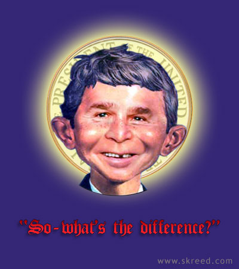

|

Infallible
It doesn't matter what he says or does because he is blessed. So in the words of The Annointed One, "what's the difference?"
- - - - - - - - - -
skreed.com
``The Lord has just blessed [President Bush]. I mean, he could make terrible mistakes and comes out of it. It doesn't make any difference what he does, good or bad, God picks him up because he's a man of prayer and God's blessing him.''
"So what’s the difference?"
- "President" George W. Bush, when asked if Saddam actually had WMD or if he only had the potential to acquire them.
http://www.liberaloasis.com
 HIS CONFIRMS MY OBSERVATION that for most Republicans, it apparently doesn't matter what George W. Bush says or does, they'll support him anyway. Whenever watching The Annointed One struggling to put together a coherent thought, one may wonder "Why does he even bother?" He could blather in tongues while foaming at the mouth and the American public and the compliant media would pretend not to notice... or simply believe he is touched by the holy spirit. HIS CONFIRMS MY OBSERVATION that for most Republicans, it apparently doesn't matter what George W. Bush says or does, they'll support him anyway. Whenever watching The Annointed One struggling to put together a coherent thought, one may wonder "Why does he even bother?" He could blather in tongues while foaming at the mouth and the American public and the compliant media would pretend not to notice... or simply believe he is touched by the holy spirit.

|